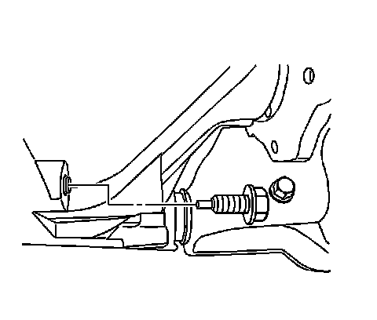

Front Drive Axle
Front Axle Lubricant Replacement
Removal Procedure
1. Raise the vehicle. Refer to Lifting and Jacking the Vehicle.
2. Remove the front differential carrier shield, if equipped. Refer to Shield Replacement.
3. Clean the area around the front axle fill plug and the drain plug.
4. Remove the fill plug.

5. Remove the drain plug.
6. Drain the fluid from the front differential carrier assembly.
Installation Procedure
Notice: Refer to Fastener Notice.
1. Install the drain plug.
Tighten the drain plug to 33 N.m (24 lb ft).
2. Fill the differential carrier assembly with axle lubricant. Use the correct fluid. Refer to Approximate Fluid Capacities. Sealers, Adhesives, and Lubricants.
3. Install the fill plug.
Tighten the fill plug to 33 N.m (24 lb ft).
4. Install the front differential carrier shield, if equipped. Refer to Shield Replacement.
5. Lower the vehicle.